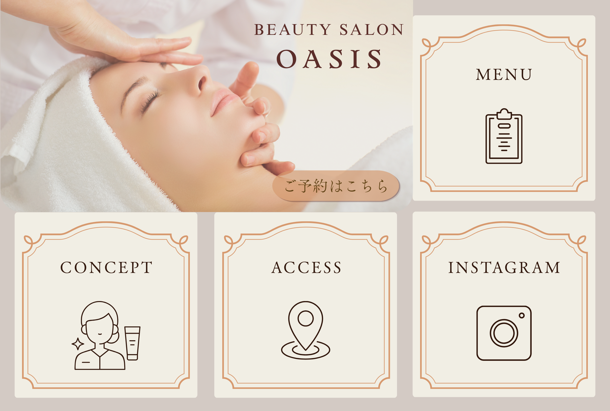

OASIS LINEリッチメニュー

制作概要
アイボリー、グレージュ、ゴールドを組み合わせ、高級感のある落ち着いたデザインに仕上げています。
制作意図
大人の女性が安心して通える、洗練されたサロンイメージを表現しました。
ターゲット
エイジングケアや美容意識の高い30〜50代女性
工夫した点
- アイボリー×ゴールドで上品かつ清潔感のある配色
- メインビジュアルにフェイシャル施術写真を使用し、サービス内容を直感的に伝達
- 装飾フレームで高級ホテルのような上質感を演出
- 予約導線をわかりやすく配置し、行動につながりやすくしました
使用ツール
Canva
一覧へ戻る